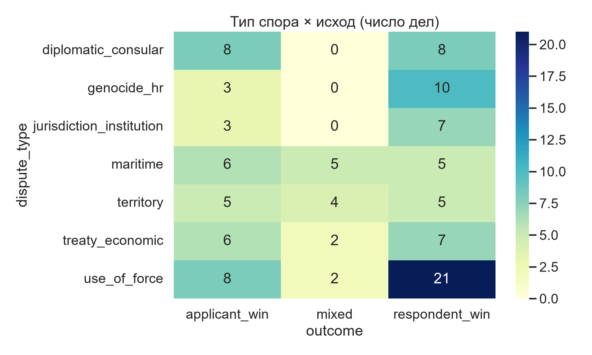

Хи-квадрат «исход × тип спора»: p = 0.034 (Cramér's V = 0.31). В делах о применении силы ответчик выигрывает втрое чаще заявителя; в дипломатических/консульских — шансы 50/50.
Сгенерировано build_site.py из данных Court of Justice.csv · 115 дел Международного суда ООН